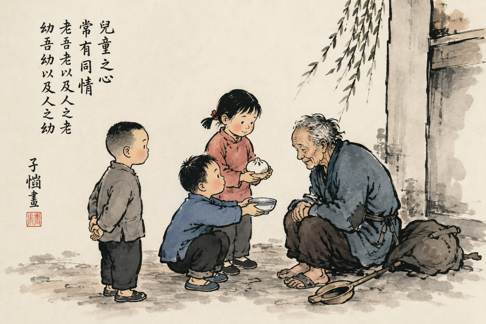
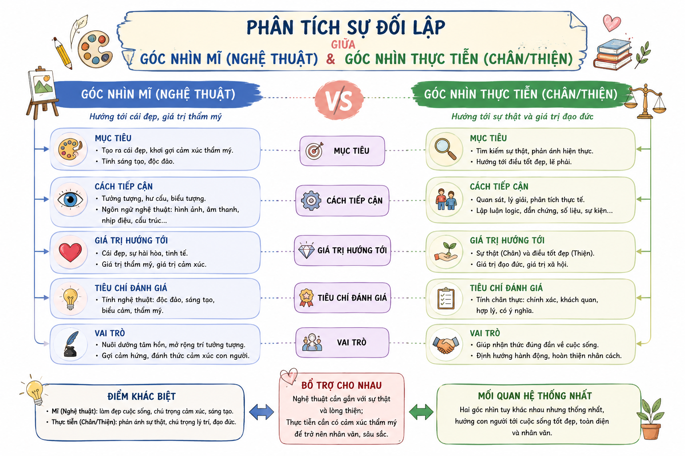

NGỮ VĂN 10 • CHƯƠNG TRÌNH GDPT 2018 (BỘ KẾT NỐI TRI THỨC VỚI CUỘC SỐNG)
YÊU VÀ ĐỒNG CẢM
(Trích "Sống vốn đơn thuần" / Chương "Sống mà học nghệ thuật")
Tác giả: Phong Tử Khải (1898 - 1975)
I
TRƯỚC KHI ĐỌC (KHỞI ĐỘNG)
✋ Nêu vấn đề & Suy ngẫm ban đầu
Hãy suy ngẫm về bản chất của sự đồng cảm trong cuộc sống thường nhật cũng như cảm xúc rung động của bản thân mỗi khi tiếp xúc với một tác phẩm nghệ thuật.

Hình 1: Tấm lòng đồng cảm hồn nhiên của trẻ thơ trong tranh mạn họa Phong Tử Khải
Câu hỏi 1: Bạn hiểu thế nào về sự đồng cảm trong cuộc sống? Cảm xúc của bạn khi trao/nhận sự đồng cảm?
Hướng giải quyết: Sự đồng cảm là khả năng thấu hiểu, chia sẻ, đặt mình vào vị trí của người khác (hoặc vạn vật) để cảm nhận nỗi đau, niềm vui hay tư thế của họ. Khi trao đi sự đồng cảm, ta cảm thấy lòng mình thanh thản, rộng mở; khi nhận được sự đồng cảm, ta thấy bớt cô đơn và được an ủi, tiếp thêm sức mạnh.
Câu hỏi 2: Bạn thường có cảm xúc gì mỗi lần tiếp xúc với một tác phẩm nghệ thuật (văn học, hội họa, âm nhạc...)?
Hướng giải quyết: Khi tiếp xúc với nghệ thuật, ta thường nảy sinh các cảm xúc như xúc động, ngỡ ngàng, mê hăng, đồng điệu hoặc băn khoăn trăn trở. Lý do là vì tác phẩm nghệ thuật chứa đựng tâm hồn, tình cảm của người nghệ sĩ và có khả năng đánh thức sự đồng cảm, thẩm mỹ ẩn sâu trong tâm trí người đọc/người xem.
II
KHÁM PHÁ NỘI DUNG VĂN BẢN & TRI THỨC TRỌNG TÂM
📌 Luận điểm & Tư tưởng cốt lõi của Phong Tử Khải
Lòng đồng cảm (Einfühlung): Nghệ thuật thực sự bắt nguồn từ lòng đồng cảm bao la quảng đại. Khác với người bình thường chỉ đồng cảm với đồng loại, người nghệ sĩ có lòng đồng cảm trải khắp vạn vật (cả sinh vật và phi sinh vật), đưa tâm hồn về trạng thái "Ta và vật một thể".
Thế giới của Mĩ vs. Thế giới của Chân & Thiện: Người nghệ sĩ thưởng thức dáng vẻ, hình thái của sự vật trong hiện tại một cách vô tư lợi, không quan tâm tới giá trị thực tiễn hay quan hệ nhân quả utilitarian.
1
Về Tác Giả & Xuất Xứ
Tác giả: Phong Tử Khải (1898 - 1975), nhà văn, họa sĩ, dịch giả, nhà lý luận giáo dục nghệ thuật hàng đầu Trung Quốc.
Phong cách: Dung dị, thuần khiết, coi trọng tấm lòng thơ trẻ trong nhìn nhận cuộc sống và nghệ thuật.
Xuất xứ: Trích chương 5 "Sống mà học nghệ thuật" thuộc tập văn - họa "Sống vốn đơn thuần".
2
Bố Cục 6 Phần Văn Bản
Phần 1: Chuyện chú bé xếp đồ đạc & Khái niệm lòng đồng cảm.
Phần 2: Góc nhìn gốc cây (Họa sĩ vs Bác làm vườn/Thợ mộc/Nhà khoa học).
Phần 3: Đồng cảm là phẩm chất bắt buộc của nghệ sĩ.
Phần 4: Lòng đồng cảm mở rộng ra vạn vật ("Ta và vật một thể").
Phần 5: Điểm tương đồng giữa Trẻ em và Nghệ sĩ.
Phần 6: Ý nghĩa của giáo dục nghệ thuật: Nhìn lại thế giới hoàng kim.

Hình 2: Sơ đồ phân tích sự đối lập giữa Góc nhìn Mĩ (Nghệ thuật) và Góc nhìn Thực tiễn (Chân/Thiện)
III
HƯỚNG DẪN TRẢ LỜI CÂU HỎI SGK (7 CÂU)
1
Các đoạn/câu nói về trẻ em và tuổi thơ? Vì sao tác giả nhắc nhiều đến trẻ em?
Lời giải chi tiết:
- Các câu/đoạn về trẻ em: Câu chuyện chú bé xếp lại đồng hồ, chén trà, đôi giày ở phần 1; so sánh họa sĩ đưa tấm lòng về trạng thái hồn nhiên như trẻ nhỏ ở phần 3; đoạn ca tụng trẻ em có lòng đồng cảm tự nhiên với vạn vật ở phần 5 và 6.
- Lý do tác giả nhắc nhiều đến trẻ em: Vì trẻ em có bản chất là nghệ sĩ thiên bẩm. Trẻ em sở hữu lòng đồng cảm chân thành, tự nhiên nhất, chưa bị các quy tắc thực dụng của thế giới người lớn làm cho hao mòn hay cản trở.
2
Những từ ngữ nào cho thấy điều tác giả bàn luận không chỉ bó hẹp trong hội họa?
Lời giải chi tiết: Các từ ngữ như: "nghệ sĩ", "nghệ thuật", "nhà thơ", "văn miêu tả", "thế giới của Mĩ", "bản chất của trẻ thơ là nghệ thuật", "bồi dưỡng về nghệ thuật". Điều này chứng minh tác giả bàn luận về bản chất chung của toàn bộ các ngành sáng tạo nghệ thuật và tâm cảnh thẩm mỹ trong đời sống con người.
3
Nội dung trọng tâm 6 phần và sự liên kết giữa các phần?
Lời giải chi tiết:
- Phần 1: Dẫn dắt từ câu chuyện thực tế về chú bé đến khái niệm lòng đồng cảm.
- Phần 2: Khác biệt giữa góc nhìn nghệ thuật (Mĩ) và góc nhìn thực tiễn (Chân/Thiện).
- Phần 3: Khẳng định lòng đồng cảm là phẩm chất bắt buộc để trở thành nghệ sĩ thực sự.
- Phần 4: Biểu hiện của lòng đồng cảm rộng lớn ("Ta và vật một thể").
- Phần 5: Khai phá sự tương đồng giữa bản chất trẻ thơ và nghệ sĩ.
- Phần 6: Ý nghĩa nâng cao của giáo dục nghệ thuật đối với con người.
\(\rightarrow\) Đánh giá liên kết: Các phần nối tiếp nhau theo mạch lập luận đi từ cụ thể đến khái quát, từ hiện tượng đời sống đến lý luận nghệ thuật sâu sắc, kết cấu cực kỳ chặt chẽ.
4
Lý lẽ, bằng chứng khẳng định tầm quan trọng của sự đồng cảm trong sáng tạo nghệ thuật?
Lời giải chi tiết:
- Lý lẽ: Nếu không có lòng đồng cảm bao la mà chỉ chăm chăm vào kỹ thuật thì tối đa chỉ trở thành "thợ vẽ"; người nghệ sĩ phải biết cùng buồn vui, cùng sống với đối tượng.
- Bằng chứng: Họa sĩ muốn vẽ ăn mày phải đặt lòng mình vào sự đau khổ của người ăn mày; muốn khắc họa anh hùng/thiếu nữ phải có tinh thần khoáng đạt/dịu dàng tương ứng; vẽ bình hoa thì phải biến mình thành bình hoa, cảm nhận sắc xanh của bình hoa.
5
Điểm tương đồng giữa trẻ em và người nghệ sĩ? Cơ sở trân trọng trẻ em của tác giả?
Lời giải chi tiết:
- Điểm tương đồng: Cả hai đều có lòng đồng cảm tự nhiên, rộng mở với vạn vật (chó mèo, hoa cỏ, đồ vật); không nhìn sự vật bằng con mắt thực lợi, có khả năng phát hiện ra nét đẹp mà người lớn thường bỏ qua.
- Cơ sở trân trọng: Trẻ em giữ được tâm hồn thuần khiết, chân thành tự nhiên nhất trước khi bị những tư tưởng thực dụng của xã hội dồn ép và làm tha hóa.
6
Ảnh hưởng nếu không có đoạn kể về chú bé giúp xếp đồ đạc ở phần 1?
Lời giải chi tiết: Nếu bỏ đoạn kể ở phần 1, bài văn sẽ mất đi sự tự nhiên, sinh động và sức thuyết phục ban đầu. Câu chuyện thực tế đời thường này vừa gây ấn tượng thu hút người đọc, vừa làm tiền đề thực tiễn vững chắc để tác giả rút ra khái niệm "lòng đồng cảm" và "tâm cảnh nghệ thuật" một cách không khô khan.
7
Lý giải ý kiến của Xuân Diệu: "Hãy nhìn đời bằng đôi mắt xanh non"?
Lời giải chi tiết: "Đôi mắt xanh non" là ẩn dụ cho góc nhìn tươi mới, hồn nhiên, ngây thơ của tuổi trẻ/trẻ thơ. Xuân Diệu đề nghị như vậy vì chỉ khi nhìn đời bằng sự ngơ ngác, trong trẻo và giàu lòng đồng cảm ấy, con người mới khám phá ra những vẻ đẹp kì diệu, tinh khôi của thế giới mà cái nhìn già nua, thực dụng đã vô tình che lấp.
IV
GAMESHOW CỦNG CỐ: "AI LÀ TRIỆU PHÚ KIẾN THỨC" (10 CÂU)
Tự động chấm điểm
V
BÀI TẬP TỰ LUẬN & VẬN DỤNG NÂNG CAO
Bài 1 (Phân tích lý luận): Phân tích sự đối lập giữa "Thế giới của Mĩ" và "Thế giới của Chân - Thiện".
Yêu cầu: Giải thích lý do vì sao một hòn đá lạ hay bông hoa dại không giá trị thực tế lại là đề tài tuyệt vời của nghệ sĩ.
Hướng dẫn giải:
- Thế giới Chân - Thiện (Thực tiễn): Con người nhìn sự vật qua lăng kính mục đích, công dụng, giá trị sử dụng và quan hệ nguyên nhân - kết quả. Hòn đá hay bông hoa dại không đem lại lợi ích vật chất nên bị coi là vô giá trị.
- Thế giới Mĩ (Nghệ thuật): Nghệ sĩ thưởng thức dáng vẻ, hình màu và sức sống bản thể của sự vật hiện tại một cách hoàn toàn vô tư lợi. Hòn đá lạ hay hoa dại mang vẻ đẹp tự nhiên, độc đáo độc nhất, khơi gợi lòng đồng cảm sâu sắc nên trở thành tuyệt tác trong mắt nhà thơ, họa sĩ.
Bài 2 (Suy ngẫm triết lý): Phân tích quan niệm "Nghệ sĩ lớn ắt là những người có nhân cách vĩ đại".
Giả sử ta đánh giá dung lượng tâm hồn nghệ sĩ qua chỉ số đồng cảm \( E \). Nếu lòng đồng cảm đủ khoáng đạt để hòa nhịp với anh hùng thì \( E_{\text{anh hùng}} > 0 \), đủ dịu dàng để đồng điệu với thiếu nữ thì \( E_{\text{thiếu nữ}} > 0 \).
Hãy chứng minh rằng nhân cách vĩ đại là điều kiện cần để sáng tạo nên tác phẩm bất hủ.
Hướng dẫn giải:
- Một nghệ sĩ nếu tâm hồn hẹp hòi, ích kỷ thì không thể nhập vai hay thấu hiểu được những nỗi đau, khát vọng lớn lao của nhân loại.
- Nhân cách vĩ đại thể hiện ở tấm lòng bao la như trời đất, có thể chứa đựng trọn vẹn cả vạn vật "có tình lẫn vô tình". Chính sự dung chứa rộng lớn đó tạo nên sức mạnh tinh thần dư dật, giúp tác phẩm mang tầm vóc nhân đạo sâu sắc.
Bài 3 (Kết nối đọc - viết): Viết đoạn văn (~150 chữ) về chủ đề "Sự đồng cảm tạo nên vẻ đẹp gắn kết của thế giới".
Đề bài theo SGK: Viết đoạn văn ngắn khoảng 150 chữ thể hiện suy nghĩ của em về vai trò của sự đồng cảm trong việc kết nối con người và vạn vật.
Đoạn văn tham khảo mẫu:
Sự đồng cảm chính là chiếc cầu nối diệu kỳ tạo nên vẻ đẹp gắn kết bền vững cho toàn bộ thế giới. Khi ta biết mở rộng lòng mình để lắng nghe và thấu hiểu, khoảng cách giữa người với người sẽ bị xóa bỏ, nhường chỗ cho tình yêu thương và sự sẻ chia chân thành. Không dừng lại ở mối quan hệ giữa đồng loại, lòng đồng cảm sâu sắc – như quan niệm của Phong Tử Khải – còn trải rộng đến vạn vật thiên nhiên, cỏ cây, hoa lá. Khi biết đau trước một cành cây bị bẻ gãy, biết yêu thương một sinh linh bé nhỏ, con người sẽ sống hòa hợp, có trách nhiệm và giàu văn hóa hơn. Nhờ có sự đồng cảm, thế giới thoát khỏi sự vô cảm lạnh lẽo của tư tưởng thực dụng để trở thành một không gian tràn ngập ấm áp, nhân ái và hòa bình.